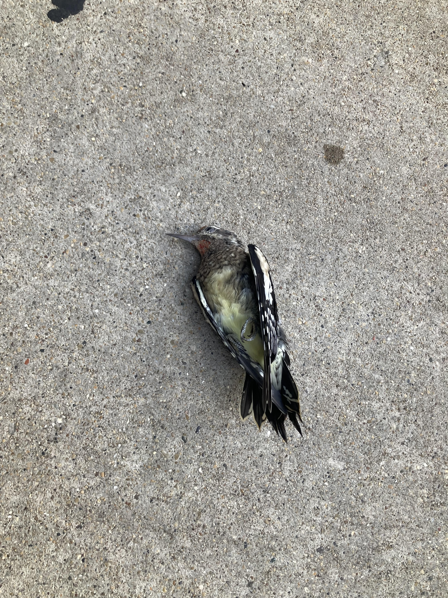
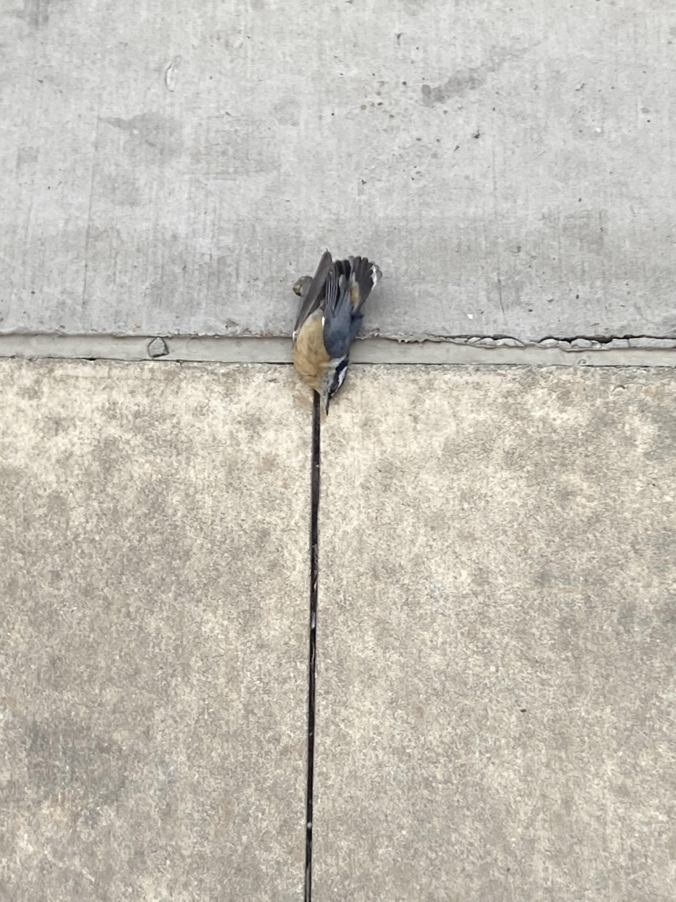
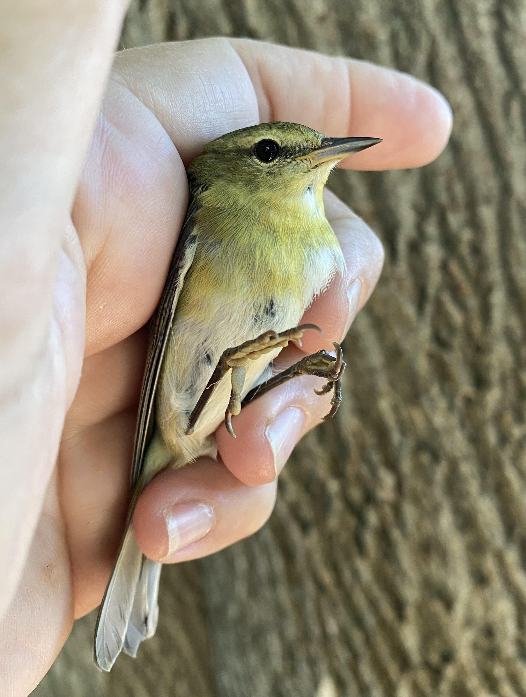

I have volunteered at a wildlife rescue center for around five years.
My center mostly focuses on wild animals in Chicago such as coyotes, raccoons, squirrels, and espcially birds. Millions of birds migrate through Chicago each year, and many of them hit windows.
Some of these birds break their necks and die on impact.
This is a dead Yellow-Bellied Sapsucker and a dead Black-Capped Chickadee that I found on my way to school.
 However, many of these birds survive the initial impact, but are stunned badly, and sit helpless on city sidewalks or streets. My center patrolls downtown for these birds, and usually finds up to five a day in four square blocks.
When we find these birds, we take them to a center, check them for bad injuries, and administer anti-shock medication. We then place them in warm incubation cabinets so they can recover in a safe place.
When they recover, we release them back into the wild! This is a warbler I found alive but stunned about to be released after recovery!
Migratory birds are a crucial part of our ecosystem, and recuing them helps alleviate human impact on the environment. If you ever find an injured bird or any other wildlife in Chicago, please go to the Flint Creek Wildlife Rehab "Found an Animal" page!
Flint Creek Wildlife Rehabilitation: Found an Animal